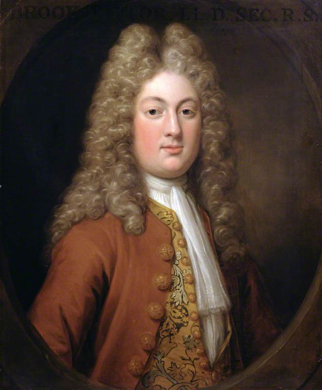
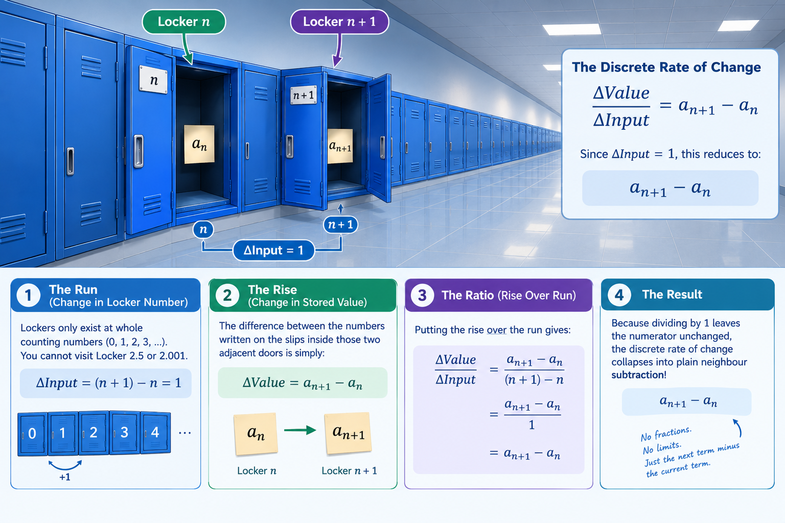

Week 1, Lecture 3: Sequences and Discrete Calculus

Finding Your Footing: Welcome to Discrete Dynamics
If you have studied calculus in secondary school, functions have almost always meant continuous curves: drawing a parabola $y = x^2$ with an unbroken pencil line, sliding along a smooth curve, or taking the tangent line at any arbitrary decimal value like $x = 1.414$. In that continuous universe, numbers flow into one another without gaps, and change happens smoothly and instantaneously.
In this lecture, we step back from smooth slides and instead examine stepping stones. Rather than gliding across all real numbers, we take discrete integer steps: step 0, step 1, step 2, step 3... This is the world of sequences. Instead of asking what happens at $x = 1.414$, we ask what happens at the 100th locker, or how an infinite list of numbers behaves as our step counter marches toward infinity.
At first glance, undergraduate analysis notation—subscripts $a_n$, index ranges $(a_n)_{n=0}^\infty$, and difference operators $a_n'$—can look intimidatingly formal. Rest assured: every symbol in this lecture is simply a clean, precise way to label an item in an infinite list. You already intuitively understand these patterns from everyday life (such as monthly bank balances or compounding interest).
Take your time as we walk down the infinite locker corridor. See how arithmetic strides and geometric zoom factors govern discrete growth, notice how taking differences gives us a "discrete derivative," and enjoy seeing how discrete arithmetic lays the unshakable foundation for the limits and convergence theorems awaiting us in Week 2!
📌 Lecture 3 Topics
- 1. What is a Sequence? (From Numbered Lockers to Formal Mappings)
- 2. A Gallery of Fundamental Sequences
- 3. Arithmetic and Geometric Progressions (Deep Dive)
- 4. Classifying Behavior: Monotonicity and Bounds
- 5. The Algebra of Sequences (Scaling and Sums)
- 6. Discrete Calculus: The Derived Sequence ($a_n'$)
- 7. Reversing the Difference: Partial Sums and Series
- 8. The Grand Arc: From Discrete Rungs to the Continuum
1. What is a Sequence? (From Numbered Lockers to Formal Mappings)
📖 Notation Reference: Sequences & Index Notation
The Intuitive Picture: An Infinite Hallway of Numbered Lockers
Before writing down any abstract symbols, think of a sequence as an infinite hallway lined with numbered school lockers:
- The locker door is labeled with a natural counting number: Locker $0$, Locker $1$, Locker $2$, Locker $3$, and so on. We call this whole number the index ($n \in \mathbb{N}$).
- When you open door $n$, there is a slip of paper inside with an actual real number written on it. We call that stored number the $n$-th term ($a_n \in \mathbb{R}$).

Figure 3.1: The sequence mapping $a: \mathbb{N} \to \mathbb{R}$ visualized as an infinite corridor. Each discrete locker door represents the natural index ($n \in \mathbb{N}$), while the contents inside reveal the corresponding real term ($a_n \in \mathbb{R}$).
The Aha! Moment: Why a Sequence is Actually a Function
Why do pure mathematicians insist on calling this simple list of lockers a function?
Think back to our definition of a function in Lecture 1: a rule that takes every input from a starting set (the domain) and assigns it to exactly one output in a target set (the codomain). That is exactly what our locker hallway does!
You give the system a locker number ($n \in \mathbb{N}$), and it returns the single real number inside that locker ($a_n \in \mathbb{R}$). Therefore:
A sequence of real numbers is a function $a: \mathbb{N} \to \mathbb{R}$ whose domain is the set of natural numbers $\mathbb{N}$ (or $\mathbb{N} \setminus \{0\} = \{1, 2, 3, \dots\}$) and whose codomain is the set of real numbers $\mathbb{R}$.
Instead of writing function parentheses like $a(n)$, we write the input as a lower subscript:
💡 Does Indexing Start at $0$ or $1$?
In mathematics, whether the natural numbers $\mathbb{N}$ include $0$ depends on context and convenience:
- When modeling sets, counting dominoes, or building polynomial terms ($c_0 + c_1 x + \dots$), starting at $n=0$ is standard.
- When dealing with fractions like $a_n = \frac{1}{n}$, dividing by zero is undefined, so we start at $n=1$.
Neither choice is "wrong." Always check the bottom bound on the index notation $(a_n)_{n=0}^\infty$ versus $(a_n)_{n=1}^\infty$.
2. A Gallery of Fundamental Sequences
How Do We Specify What Goes Inside Each Locker?
When constructing a sequence, there are two primary ways to describe the contents of every locker along the infinite corridor:
- An Explicit Formula (Direct Calculation): A direct algebraic equation that lets you calculate the value inside locker $n$ immediately. For example, if $a_n = n^2$, finding the contents of the $100\text{th}$ locker requires no intermediate work: $a_{100} = 100^2 = 10{,}000$.
- A Descriptive or Structural Rule (Pattern-Based): A well-defined rule that uniquely determines what number belongs at step $n$, even if there is no high-school algebraic formula to jump there directly. For instance, "let $p_n$ be the $n\text{th}$ prime number" is completely rigorous because every natural index $n$ pairs with a single, unambiguous prime.
Below are four foundational prototypes encountered throughout real analysis:
1. The Sequence of Perfect Squares: $a_n = n^2$ (for $n \ge 0$)
Explicit terms: $a_0 = 0,$ $a_1 = 1,$ $a_2 = 4,$ $a_3 = 9,$ $a_4 = 16,$ $\dots$
2. The Harmonic Sequence: $a_n = \frac{1}{n}$ (for $n \ge 1$)
Explicit terms: $a_1 = 1,$ $a_2 = \frac{1}{2},$ $a_3 = \frac{1}{3},$ $a_4 = \frac{1}{4},$ $a_5 = \frac{1}{5},$ $\dots$
3. The Alternating Sequence: $a_n = (-1)^n$ (for $n \ge 0$)
Explicit terms: $a_0 = 1,$ $a_1 = -1,$ $a_2 = 1,$ $a_3 = -1,$ $a_4 = 1,$ $\dots$
4. The Prime Sequence: $p_n$ (for $n \ge 1$)
Explicit terms: $p_1 = 2,$ $p_2 = 3,$ $p_3 = 5,$ $p_4 = 7,$ $p_5 = 11,$ $\dots$
3. Arithmetic and Geometric Progressions (Deep Dive)
📖 Notation Reference: Progression Parameters
1. Unpacking the Two Great Motions: Strides vs. Zoom
Think about the two fundamentally different ways you can travel along our infinite locker hallway:
- The Paced Walk (Arithmetic): You lock your stride to a wooden ruler. Every single step forward adds the exact same physical distance to your odometer—one foot, two feet, three feet. You advance through pure addition.
- The Magnifying Glass (Geometric): You stay stationary, but you twist a camera's zoom lens. A $2\times$ twist doubles your field of view; another twist doubles that again, exploding fourfold, eightfold, sixteenfold. You advance through compounding multiplication.
School algebra often presents formulas like $c_n = an + b$ and $c_n = a q^n$ as arbitrary recipes to memorize for exams. But they are really the mathematical transcripts of these two distinct physical rhythms: steady linear pacing versus explosive compounding magnification.
Figure 3.2: The two fundamental engines of discrete dynamics. 1. The Paced Walk (Arithmetic): Advancing by fixed measuring-tape strides (+1 each step). 2. The Magnifying Glass (Geometric): Compounding field-of-view magnification (×2 each twist).
The Arithmetic Progression: Walking with Constant Strides
Imagine standing at position $b$ right in front of Locker 0. To travel down the corridor, you decide that every single time you move from one locker to the next, you will take a rigid, identical stride forward of length $a$.
Let's trace your position step-by-step:
- At Locker 0, you haven't taken any steps yet, so your position is just your starting baseline: $c_0 = b$.
- At Locker 1, you have taken 1 stride forward: $c_1 = b + a$.
- At Locker 2, you have taken 2 strides forward: $c_2 = b + a + a = b + 2a$.
- At Locker $n$, you have taken $n$ identical strides forward from your baseline. By basic multiplication, adding $a$ to itself $n$ times gives $an$.
This gives us the defining formal definition of an arithmetic sequence:
A sequence $(c_n)_{n=0}^\infty$ is an arithmetic progression if each term is obtained by adding a constant difference $a$ to the preceding term:
The Geometric Progression: The Exponential Multiplier
Now imagine a completely different mode of travel along the locker corridor. Instead of taking additive strides, suppose Locker 0 starts with an initial seed quantity $a$, and every single time you cross from one locker to the next, your current holdings are multiplied by a zoom factor $q$.
Let's trace how this compounding magnification unfolds:
- At Locker 0, you have multiplied by $q$ zero times: $c_0 = a \cdot q^0 = a \cdot 1 = a$.
- At Locker 1, you have multiplied your seed quantity by $q$ once: $c_1 = a \cdot q$.
- At Locker 2, you have multiplied by $q$ twice: $c_2 = (a \cdot q) \cdot q = a \cdot q^2$.
- At Locker $n$, you have applied the multiplicative zoom factor $q$ exactly $n$ successive times, which naturally groups into the exponent $q^n$.
This gives us the defining formal definition of a geometric sequence:
A sequence $(c_n)_{n=0}^\infty$ is a geometric progression if each term is obtained by multiplying the preceding term by a constant ratio $q$:
Standing in front of Locker 0. Inspecting the baseline contents before any steps are taken.
⚙ What Is Happening (Mechanics)
💡 Why The System Does This (Rationale)
2. The Detective Test: How to Diagnose Any Mystery Sequence
Suppose someone hands you a raw list of numbers and asks: "Is this arithmetic, geometric, or neither?" Don't guess! Run this simple 2-step diagnostic:
-
Test 1: Subtraction (Checking for Constant Stride).
Subtract each term from its successor: $c_1 - c_0$, then $c_2 - c_1$, then $c_3 - c_2$.
• If all the differences equal the exact same number $a$, you have an arithmetic sequence with common difference $a$! -
Test 2: Division (Checking for Constant Ratio).
Divide each term by its predecessor: $c_1 / c_0$, then $c_2 / c_1$, then $c_3 / c_2$.
• If all the quotients equal the exact same number $q$, you have a geometric sequence with common ratio $q$!
🔍 Worked Example: Diagnosing Three Mystery Sequences From Raw Terms
Suppose you are handed three raw lists on an exam and asked to identify their type and determine their closed-form formula for Locker $n$:
-
Mystery Sequence A: $(7, 11, 15, 19, 23, \dots)$
• Step 1 (Check Differences):
$c_1 - c_0 = 11 - 7 = 4$
$c_2 - c_1 = 15 - 11 = 4$
$c_3 - c_2 = 19 - 15 = 4$
• Diagnosis: The difference is constant ($a = 4$). This is an Arithmetic Progression.
• Construct the Formula: Baseline at Locker 0 is $b = 7$. The general term is:$$c_n = an + b = 4n + 7 \quad (n \ge 0)$$ -
Mystery Sequence B: $(48, -24, 12, -6, 3, \dots)$
• Step 1 (Check Differences):
$c_1 - c_0 = -24 - 48 = -72$
$c_2 - c_1 = 12 - (-24) = 36$ (Not constant! Not arithmetic.)
• Step 2 (Check Quotients):
$\frac{c_1}{c_0} = \frac{-24}{48} = -\frac{1}{2}$
$\frac{c_2}{c_1} = \frac{12}{-24} = -\frac{1}{2}$
$\frac{c_3}{c_2} = \frac{-6}{12} = -\frac{1}{2}$
• Diagnosis: The quotient is constant ($q = -\frac{1}{2}$). This is a Geometric Progression.
• Construct the Formula: Starting factor at Locker 0 is $a = 48$. The general term is:$$c_n = a \cdot q^n = 48 \cdot \left(-\frac{1}{2}\right)^n \quad (n \ge 0)$$ -
Mystery Sequence C (The Trap): $(1, \frac{1}{2}, \frac{1}{3}, \frac{1}{4}, \dots)$
• Step 1 (Differences): $\frac{1}{2} - 1 = -\frac{1}{2}$, but $\frac{1}{3} - \frac{1}{2} = -\frac{1}{6}$. (Fails arithmetic test.)
• Step 2 (Quotients): $\frac{1/2}{1} = \frac{1}{2}$, but $\frac{1/3}{1/2} = \frac{2}{3}$. (Fails geometric test.)
• Diagnosis: Neither! This is the harmonic sequence $c_n = \frac{1}{n+1}$ (or $1/n$ for $n \ge 1$). Knowing when to say "neither" prevents you from forcing the wrong formula onto a problem!
💡 Why Do We Exclude $a = 0$ and $q \in \{0, 1\}$ in Geometric Sequences?
Students often wonder why textbooks include fine-print restrictions like $a \ne 0$ and $q \ne 0, 1$. The reason is simply to prevent the sequence from "breaking" into a trivial, uninteresting list:
- If $a = 0$, then $c_n = 0 \cdot q^n = 0$ for every term. The sequence is permanently frozen at zero.
- If $q = 0$, then $c_0 = a$, but every subsequent term becomes $a \cdot 0^n = 0$. It falls off a cliff immediately.
- If $q = 1$, then $1^n = 1$, so the sequence is permanently $(a, a, a, a, \dots)$. Nothing is actually scaling!
3. Fully Worked Application Scenarios
🎯 Worked Example A: The Daily Savings Account (Arithmetic Progression)
Scenario: You start with $\$10$ in a piggy bank on Day 0. Every day thereafter, you deposit $\$3$. Let $c_n$ be your savings on Day $n$.
- Identify the parameters:
• Base starting amount: $b = 10$ (the value in Locker 0: $c_0 = 10$).
• Step size added daily: $a = 3$ (common difference). - Write the general formula:
$$c_n = an + b = 3n + 10$$ - Compute the first few terms by hand:
• Day 0: $c_0 = 3(0) + 10 = 10$
• Day 1: $c_1 = 3(1) + 10 = 13$ (notice: $10 + 3 = 13$)
• Day 2: $c_2 = 3(2) + 10 = 16$ (notice: $13 + 3 = 16$)
• Day 3: $c_3 = 3(3) + 10 = 19$
The sequence is $(10, 13, 16, 19, \dots)$. - Jump directly to the future without counting step-by-step:
How much money will you have on Day 50?
You don't need to add 3 fifty times! Just plug in $n = 50$:
$$c_{50} = 3(50) + 10 = 150 + 10 = \$160$$
🎯 Worked Example B: Half-Life Decay (Geometric Progression)
Scenario: A sample contains $80\text{ grams}$ of a substance. Each hour, exactly half of the remaining substance decays. Let $c_n$ be the mass remaining after $n$ hours.
- Identify the parameters:
• Starting factor: $a = 80$ (the value in Locker 0: $c_0 = 80$).
• Multiplier at each hour: $q = \frac{1}{2}$ (common ratio). - Write the general formula:
$$c_n = a \cdot q^n = 80 \cdot \left(\frac{1}{2}\right)^n$$ - Compute the first few terms by hand:
• Hour 0: $c_0 = 80 \cdot (1/2)^0 = 80 \cdot 1 = 80\text{ g}$
• Hour 1: $c_1 = 80 \cdot (1/2)^1 = 40\text{ g}$ (halved once)
• Hour 2: $c_2 = 80 \cdot (1/2)^2 = 80 \cdot 1/4 = 20\text{ g}$ (halved again)
• Hour 3: $c_3 = 80 \cdot (1/2)^3 = 80 \cdot 1/8 = 10\text{ g}$
The sequence is $(80, 40, 20, 10, 5, \dots)$. - Jump directly to Hour 6:
How much remains after 6 hours?
$$c_6 = 80 \cdot \left(\frac{1}{2}\right)^6 = 80 \cdot \frac{1}{64} = \frac{80}{64} = \frac{5}{4} = 1.25\text{ g}$$
4. Classifying Behavior: Monotonicity and Bounds
📖 Notation Reference: Monotonicity & Boundedness
1. The Geometry of Monotonicity: Preserving Direction
The word monotonic comes from Greek roots meaning "one single tone" or "one single style." When mathematicians apply this term to an infinite sequence, don't let the formal notation intimidate you. The concept is deeply intuitive: a sequence is monotonic if it picks a single direction along the real line and commits to it forever.
Imagine walking down our infinite locker hallway, where the number inside each consecutive locker records your position step by step:
-
Strictly Increasing ($a_{n+1} > a_n$): Every step down the hallway opens a locker holding a strictly larger number than the one before it. You are stepping toward larger values without any flat pauses or backward dips:
$$a_0 < a_1 < a_2 < a_3 < \dots < a_n < a_{n+1} < \dots$$
- Weakly Increasing or "Non-Decreasing" ($a_{n+1} \ge a_n$): The numbers inside the lockers generally grow larger, but you might encounter consecutive lockers holding the exact same value for a few steps: $(80, 95, 100, 100, 100, 115, \dots)$. Notice that the values never drop backward. In higher mathematics, this flat resting phase is still classified as increasing.
- Strictly Decreasing ($a_{n+1} < a_n$) and Weakly Decreasing ($a_{n+1} \le a_n$): The exact mirror image. Each successive locker holds a number smaller than or equal to its predecessor, strictly forbidding any steps upward.
- Non-Monotonic (Oscillation / Direction Changes): What if Locker 1 holds a larger number than Locker 0, but Locker 2 drops lower than Locker 1? That sequence has changed direction. Prototype sequences like $a_n = (-1)^n = (1, -1, 1, -1, \dots)$ bounce endlessly up and down between values, making them non-monotonic.
Look at the four discrete profiles below. Notice how clearly the discrete points reveal the underlying directional behavior:
VISUALIZING MONOTONICITY: Directional Profiles in the Discrete Plane
Monotonicity means committing to a direction along the real line and never reversing course. Notice that weak monotonicity permits flat horizontal rests, but strictly forbids a step backward.
📐 Geometric Intuition: The Real Line vs. The Step Plane
When looking at sequence graphs, it is easy to confuse the two axes. Here is how the real line and the step plane work together:
- The Vertical Axis (The Real Line, $a_n$): This is the familiar one-dimensional number line. Every single number generated by the sequence lives vertically as a point on this line, representing its actual numerical magnitude.
- The Horizontal Axis (The Index, $n$): This is simply a discrete timeline or step counter ($0, 1, 2, 3\dots$). It tells you when each number appears in the sequence order.
- What Monotonicity Looks Like: As you march forward to the right along the horizontal time axis, a monotonic sequence's vertical dots steadily climb or fall along the real line without ever reversing direction.
2. Two Tool-Box Tests: How to Prove Monotonicity
When an exam or assignment asks you to prove that a sequence is monotonic, never rely on listing the first few terms! Listing terms only proves what happens at the very beginning of the infinite corridor; it does not prove what happens as $n$ marches all the way to infinity. Instead, you must use one of these two rigorous algebraic tool-box methods:
⚠️ The Finite Trap: Why Checking the First Few Terms Fails
Students frequently lose full marks on analysis assignments because they fall into the finite observation trap: calculating $a_0, a_1, a_2$, seeing that the numbers get larger, and writing "Therefore, the sequence is increasing."
Why examiners reject this: An infinite sequence has infinitely many terms. Checking the first four or five lockers only proves what happens at the very entrance of the corridor; it tells you nothing about what happens as $n$ marches toward a million, a billion, or infinity.
For example, consider the sequence $a_n = n^2 - 10n + 100$. If you check the first few terms, it might look like it's behaving one way, but functions can have hidden turning points, peaks, or behavioral shifts further down the line.
The Academic Standard: You must use algebraic inequalities involving the general variable $n$ so your proof holds true for every single natural number simultaneously, without exception.
Method A: The Difference Test (Subtract)
Form the consecutive difference $a_{n+1} - a_n$ and simplify the algebraic expression for all $n \ge 0$:
- If $a_{n+1} - a_n \ge 0$ for all $n$, the sequence is increasing.
- If $a_{n+1} - a_n \le 0$ for all $n$, the sequence is decreasing.
- Best used for: Rational functions, algebraic polynomials, fractions, and square roots.
Method B: The Ratio Test (Divide)
For sequences with strictly positive terms ($a_n > 0$), form the quotient $\frac{a_{n+1}}{a_n}$ and compare it to $1$:
- If $\frac{a_{n+1}}{a_n} \ge 1$, then $a_{n+1} \ge a_n$ (increasing).
- If $\frac{a_{n+1}}{a_n} \le 1$, then $a_{n+1} \le a_n$ (decreasing).
- Best used for: Exponential powers ($q^n$), factorials ($n!$), and product terms.
🎯 Exam-Style Worked Examples: Proving Monotonicity Step-by-Step
Example 1 (Using the Difference Test): Prove whether the sequence $a_n = \frac{n}{n + 2}$ for $n \ge 0$ is monotonic.
- Set up the difference $a_{n+1} - a_n$:
Substitute $(n+1)$ everywhere you see $n$:$$a_{n+1} - a_n = \frac{(n+1)}{(n+1) + 2} - \frac{n}{n + 2} = \frac{n+1}{n+3} - \frac{n}{n+2}$$ - Find a common denominator and combine:
The common denominator is $(n+3)(n+2)$:$$a_{n+1} - a_n = \frac{(n+1)(n+2) - n(n+3)}{(n+3)(n+2)}$$Expand the numerators:$$= \frac{(n^2 + 3n + 2) - (n^2 + 3n)}{(n+3)(n+2)} = \frac{2}{(n+3)(n+2)}$$ - Analyze the sign of the result:
Since $n \ge 0$, both factors in the denominator are strictly positive, and the numerator is a positive constant ($2 > 0$). Therefore:$$a_{n+1} - a_n > 0 \quad \text{for all } n \ge 0$$Conclusion: Because the difference is strictly greater than zero, $a_{n+1} > a_n$. The sequence is strictly increasing.
Visual Profile: Strictly Increasing ($\frac{n}{n+2}$ approaching horizontal asymptote $1$)
Example 2 (Using the Ratio Test): Prove whether the sequence $b_n = \frac{2^n}{n!}$ is monotonic for $n \ge 1$.
- Verify positivity:
For all integers $n \ge 1$, both $2^n > 0$ and $n! > 0$, so $b_n > 0$ (meaning the Ratio Test is safe to apply). - Set up the ratio $\frac{b_{n+1}}{b_n}$:
$$\frac{b_{n+1}}{b_n} = \frac{\frac{2^{n+1}}{(n+1)!}}{\frac{2^n}{n!}} = \frac{2^{n+1}}{(n+1)!} \cdot \frac{n!}{2^n}$$ - Simplify using exponents and factorials:
Note that $2^{n+1} = 2^n \cdot 2$ and $(n+1)! = (n+1) \cdot n!$:$$\frac{b_{n+1}}{b_n} = \frac{2^n \cdot 2}{(n+1) \cdot n!} \cdot \frac{n!}{2^n} = \frac{2}{n+1}$$ - Compare the quotient to $1$:
• When $n = 1$: $\frac{2}{1+1} = 1$, which means $b_2 = b_1$ (a flat plateau).
• For all $n \ge 2$: $\frac{2}{n+1} < 1$, which means $b_{n+1} < b_n$ (strict decrease).
Conclusion: Because the terms do not strictly drop on the very first step ($b_1 = b_2 = 2$), the sequence is technically weakly decreasing (or non-increasing) for $n \ge 1$, and strictly decreasing for $n \ge 2$.
Visual Profile: Weakly Decreasing for $n \ge 1$ (Flat plateau at $b_1 = b_2$, then strict cascade)
Example 3 (Strictly Decreasing via Difference Test): Prove whether the sequence $c_n = \frac{1}{n + 1}$ for $n \ge 0$ is monotonic.
- Set up the difference $c_{n+1} - c_n$:
Substitute $(n+1)$ everywhere you see $n$:$$c_{n+1} - c_n = \frac{1}{(n+1) + 1} - \frac{1}{n + 1} = \frac{1}{n+2} - \frac{1}{n+1}$$ - Find a common denominator and combine:
The common denominator is $(n+2)(n+1)$:$$c_{n+1} - c_n = \frac{(n+1) - (n+2)}{(n+2)(n+1)} = \frac{n + 1 - n - 2}{(n+2)(n+1)} = \frac{-1}{(n+2)(n+1)}$$ - Analyze the sign of the result:
Since $n \ge 0$, the denominator is strictly positive, but the numerator is a negative constant ($-1 < 0$). Therefore:$$c_{n+1} - c_n < 0 \quad \text{for all } n \ge 0$$Conclusion: Because the difference is strictly less than zero, $c_{n+1} < c_n$. The sequence is strictly decreasing.
Visual Profile: Strictly Decreasing ($\frac{1}{n+1}$ cascading down toward horizontal asymptote $0$)
Example 4 (Proving Non-Monotonicity): Show that the alternating sequence $d_n = (-1)^n$ for $n \ge 0$ is not monotonic.
- Examine consecutive differences across steps:
Compute the difference $d_{n+1} - d_n$ for the first few index steps:• From $n=0$ to $n=1$: $d_1 - d_0 = (-1)^1 - (-1)^0 = -1 - 1 = \mathbf{-2}$ (Negative: goes down)
• From $n=1$ to $n=2$: $d_2 - d_1 = (-1)^2 - (-1)^1 = 1 - (-1) = \mathbf{+2}$ (Positive: goes up) - Test the condition across all $n$:
For a sequence to be monotonic, the derived difference $d_{n+1} - d_n$ must maintain the same sign (either always $\ge 0$ or always $\le 0$) for every single $n$. - Analyze the conclusion:
Because the sign switches back and forth infinitely between negative ($–2$) and positive ($+2$), no single inequality holds for all $n$.
Conclusion: The sequence changes direction continuously, proving it is non-monotonic.
Visual Profile: Non-Monotonic / Oscillating ($(-1)^n$ alternating between $+1$ and $-1$)
Example 5 (Proving Non-Monotonicity with Periodic Plateaus): Consider the sequence $(f_n)_{n=0}^\infty$ defined by a repeating 6-step pattern: starting at $f_0 = 0$, it climbs $+1$, holds a flat plateau for two steps, drops $-1$, and holds a flat plateau for two steps, repeating ad infinitum. Prove whether this sequence is monotonic.
- Write out the explicit terms of the sequence:
Tracing the cycle step-by-step from $n = 0$ to $n = 7$:$f_0 = 0, \quad f_1 = 1, \quad f_2 = 1, \quad f_3 = 1, \quad f_4 = 0, \quad f_5 = 0, \quad f_6 = 0, \quad f_7 = 1$ - Compute the derived difference sequence $f_n' = f_{n+1} - f_n$:
Evaluate the change across each consecutive pair of lockers in the first cycle:• From $n=0$ to $1$: $f_1 - f_0 = 1 - 0 = \mathbf{+1}$ (Climb)
• From $n=1$ to $2$: $f_2 - f_1 = 1 - 1 = \mathbf{0}$ (Plateau step 1)
• From $n=2$ to $3$: $f_3 - f_2 = 1 - 1 = \mathbf{0}$ (Plateau step 2)
• From $n=3$ to $4$: $f_4 - f_3 = 0 - 1 = \mathbf{-1}$ (Drop)
• From $n=4$ to $5$: $f_5 - f_4 = 0 - 0 = \mathbf{0}$ (Plateau step 1)
• From $n=5$ to $6$: $f_6 - f_5 = 0 - 0 = \mathbf{0}$ (Plateau step 2) - Analyze the sign pattern across infinity (Periodicity):
The derived differences form a repeating cycle: $f_n' \in \{+1, 0, 0, -1, 0, 0\}$.- Because the difference hits $0$, the sequence contains flat resting plateaus (ruling out strict monotonicity).
- Because the differences include both positive ($+1$) and negative ($-1$) values, the sequence actively reverses direction.
- Conclusion:
Because the derived differences do not maintain a single global sign ($\ge 0$ everywhere or $\le 0$ everywhere), the sequence fails the monotonicity test. It is strictly non-monotonic with periodic flat plateaus.
Visual Profile: Periodic Plateau-Wave (Climbs +1, plateaus 2 steps, drops -1, plateaus 2 steps)
🕵️ Detective Technique: How Do We Know It's a Six-Step Pattern?
- Look at the Steps, Not the Values: Instead of analyzing the raw numbers ($f_n$), compute the derived differences ($f_n' = f_{n+1} - f_n$). The sequence of step changes is much easier to decode than the raw values themselves.
- Find the Fingerprint: Scan the derived differences for a repeating block of changes. In our example, the changes repeat as $(+1, 0, 0, -1, 0, 0)$, giving a total block length of 6 steps.
- Lock It Down with Modulo Arithmetic: Once the period is found, you can use clock arithmetic ($n \pmod 6$) to predict the behavior at any arbitrary index $n$ (like $n = 10^9$) without having to walk through every single locker by hand.
🔍 Detective Guide: How to Spot Plateaus vs. Oscillations
When analyzing the behavior of an infinite sequence, the derived difference ($a_n' = a_{n+1} - a_n$) tells you everything you need to know. Here is how to logically distinguish between a flat resting plateau and a wild oscillation.
📏 Logical Guide: How to Detect a Flat Plateau
A plateau is a flat resting step where the sequence neither climbs nor drops. Logically, you can find plateaus by looking at the derived sequence of differences ($a_n'$).
Let's write out the first few terms (where $\lfloor x \rfloor$ rounds down to the nearest integer):
Notice how the values stay flat in pairs ($0 \to 0$, then $1 \to 1$). How do we prove this logically using our tool-box? We compute the derived difference $c_n' = c_{n+1} - c_n$:
- When $n$ is even (e.g., $n=0$), $c_0 = 0$ and $c_1 = 0 \implies \mathbf{0\text{ difference}}$ (Plateau!)
- When $n$ is odd (e.g., $n=1$), $c_1 = 0$ and $c_2 = 1 \implies \mathbf{+1\text{ step}}$ (Climb!)
The Golden Rule for Plateaus: Whenever your difference test yields $a_n' = 0$ at a specific index $n$, you have mathematically located a flat plateau. If the difference is $\ge 0$ everywhere but hits $0$ at certain points, the sequence is weakly (not strictly) monotonic.
🌊 Logical Guide: How to Detect an Oscillation
An oscillation happens when a sequence repeatedly flips directions—climbing for a step, then plunging downward, then climbing again. Logically, you can spot oscillations by examining whether the derived difference ($a_n'$) changes signs.
Let's review the first few terms:
Notice how the values bounce back and forth across zero. How do we prove this lacks a single direction? We compute the derived difference $d_n' = d_{n+1} - d_n$:
- From $n=0$ to $n=1$: $d_1 - d_0 = -1 - 1 = \mathbf{-2}$ (Downward step!)
- From $n=1$ to $n=2$: $d_2 - d_1 = 1 - (-1) = \mathbf{+2}$ (Upward step!)
The Golden Rule for Oscillations: Whenever your difference test yields signs that flicker between positive and negative ($a_n' > 0$ for some steps and $a_n' < 0$ for others), the sequence is actively reversing direction, proving it is strictly non-monotonic.
3. Boundedness: Building Fences Around the Infinite List
One of the most common misconceptions when beginning real analysis is assuming that because an infinite sequence contains an endless number of terms, its values must inevitably grow larger and larger until they fly off to infinity.
It is vital to distinguish between an infinite domain (we never run out of counting numbers $n \in \mathbb{N}$) and the range of outputs inside the lockers. For example, consider the sequence of perfect squares $a_n = n^2 = (0, 1, 4, 9, 16, \dots)$. Here, the values truly do grow without bound; as $n$ marches toward infinity, the outputs explode upward toward infinity.
However, many infinite sequences do the exact opposite. Look at our earlier harmonic prototype, $a_n = \frac{n}{n+1} = (0, \frac{1}{2}, \frac{2}{3}, \frac{3}{4}, \dots)$. This list contains infinitely many terms, yet every single value is strictly trapped between $0$ and $1$. As $n$ grows larger and larger, the terms crowd closer and closer to $1$, but they never cross it.
⚠️ Crucial Distinction: Boundedness $\neq$ Convergence
Before we define formal bounds, beware of a major student trap: boundedness has nothing to do with where a sequence is heading (its limit).
- The Fence vs. The Destination: A bound is just an impenetrable fence ($m$ or $M$) that encloses every single term in the entire infinite list. It does not need to be the value the sequence crowds toward.
- Unbounded Limits: A sequence can have a strict upper ceiling even if it never settles down (like our bouncing alternating sequence $d_n = (-1)^n$, which is trapped safely between $-1$ and $1$ forever without ever converging).
- Over-reaching Bounds: Any number that successfully traps the terms is a valid bound. If all terms are $\le 1$, then $M = 1$ is a valid ceiling—but so is $M = 100$ or $M = 1,000$.
To capture this restriction mathematically, we construct bounds—impenetrable floors and ceilings that enclose the entire infinite list:
VISUALIZING CROWDING: Bounded Corridor for $a_n = \frac{n}{n+1}$
As $n$ marches toward infinity, the points crowd closer and closer to the ceiling $M = 1$, trapped forever between the floor $0$ and ceiling $1$.
To capture this restriction mathematically, we construct bounds—impenetrable floors and ceilings that enclose the entire infinite list:
- Bounded Above: There exists a real number $M$ such that $a_n \le M$ for all $n \in \mathbb{N}$. (An impenetrable ceiling).
- Bounded Below: There exists a real number $m$ such that $a_n \ge m$ for all $n \in \mathbb{N}$. (An unbreakable floor).
- Bounded: A sequence is bounded if it is bounded both above and below: $$m \le a_n \le M \quad \forall n \in \mathbb{N}$$ Equivalently, taking $K = \max(|m|, |M|)$, all terms lie trapped in the symmetric interval: $|a_n| \le K$.
VISUALIZING BOUNDS: Shaded Corridors vs. Unbounded Escapes
A sequence is bounded if all infinitely many terms live trapped inside a horizontal corridor between ceiling $M$ and floor $m$. If terms eventually punch through every horizontal ceiling, the sequence is unbounded.
🔗 The Bridge to Lecture 2: Sequences and Suprema
Notice how this connects directly to the Axiom of Completeness from Lecture 2!
If an infinite sequence $(a_n)$ is bounded above, then its collection of outputs forms a non-empty set of real numbers that is bounded above. Therefore, by the completeness of $\mathbb{R}$, that sequence is guaranteed to possess an exact least upper bound: a supremum $\alpha = \sup\{a_n \mid n \in \mathbb{N}\}$. This fundamental bridge will power our convergence theorems in Week 2!
🎯 Worked Example: Testing Monotonicity and Bounds by Hand
Consider the sequence $a_n = \frac{n}{n+1}$ for $n \ge 0$: $$\left(0, \; \frac{1}{2}, \; \frac{2}{3}, \; \frac{3}{4}, \; \frac{4}{5}, \; \dots\right)$$
-
Step 1: Test Monotonicity using the Difference Method.
Form the difference $a_{n+1} - a_n$:$$a_{n+1} - a_n = \frac{n+1}{(n+1)+1} - \frac{n}{n+1} = \frac{n+1}{n+2} - \frac{n}{n+1}$$Find a common denominator:$$a_{n+1} - a_n = \frac{(n+1)^2 - n(n+2)}{(n+2)(n+1)} = \frac{(n^2 + 2n + 1) - (n^2 + 2n)}{(n+2)(n+1)} = \frac{1}{(n+2)(n+1)}$$Since $n \ge 0$, the numerator is $1 > 0$ and the denominator is strictly positive. Therefore:$$a_{n+1} - a_n > 0 \quad \text{for all } n \in \mathbb{N}$$Conclusion: The sequence is strictly increasing. -
Step 2: Establish Bounds.
• Lower Bound: Because the sequence is strictly increasing, its very first term is its minimum: $a_0 = \frac{0}{0+1} = 0$. Thus, $a_n \ge 0$ for all $n$ (bounded below by $0$).
• Upper Bound: For every natural number $n$, the numerator $n$ is strictly less than the denominator $n+1$. Therefore:$$a_n = \frac{n}{n+1} < 1 \quad \text{for all } n$$Thus, the sequence is bounded above by $1$.
Conclusion: The sequence is bounded because all infinite terms live trapped inside $$0 \le a_n < 1$$
5. The Algebra of Sequences (Scaling and Sums)
📖 Notation Reference: Sequence Operations & Linear Combinations
1. Two Hallways Running Side-by-Side: Pointwise Operations
When you first see symbols like $(a + b)_n = a_n + b_n$ or $(\lambda a)_n = \lambda a_n$, it can be easy to confuse them with adding all the numbers inside a sequence together (which is a series, as we will explore in Section 7).
In sequence algebra, we are not summing across the lockers of a single hallway. Instead, picture two parallel locker hallways running side-by-side: Hallway $A$ and Hallway $B$.
- To build the new Sum Hallway $(a + b)$, you walk up to Door $n$, open Locker $n$ in Hallway $A$ to read $a_n$, open Locker $n$ in Hallway $B$ to read $b_n$, add those two numbers together, and store the result $a_n + b_n$ into Locker $n$ of the new hallway.
- To build the Scaled Hallway $(\lambda a)$, you take every slip of paper in Hallway $A$ and multiply its value by a fixed scalar multiplier $\lambda$. If $\lambda = 3$, every locker value triples. If $\lambda = -1$, every term flips sign across the origin.
- Notice that each index $n$ operates in total independence from every other locker. Mathematicians describe this as pointwise or term-by-term arithmetic.
Figure 5.1: Pointwise algebra across sequences. Opening matching Locker $n$ in Hallway $A$ ($a_n$) and Hallway $B$ ($b_n$) to synthesize the combined term $a_n + b_n$ for the Sum Hallway.
Figure 5.2: Scalar multiplication on a sequence. Every slip of paper inside Hallway $A$ has its stored magnitude scaled by multiplier $\lambda$ ($(\lambda a)_n = \lambda a_n$).
Let $(a_n)_{n=0}^\infty$ and $(b_n)_{n=0}^\infty$ be two real sequences, and let $\lambda \in \mathbb{R}$ be a real scalar.
- Scalar Multiplication: $(\lambda a)_n = \lambda \cdot a_n$ for all $n \in \mathbb{N}$.
- Sum of Sequences: $(a + b)_n = a_n + b_n$ for all $n \in \mathbb{N}$.
- Product of Sequences: $(a \cdot b)_n = a_n \cdot b_n$ for all $n \in \mathbb{N}$.
- Quotient of Sequences: $\left(\frac{a}{b}\right)_n = \frac{a_n}{b_n}$ for all $n \in \mathbb{N}$, provided $b_n \ne 0$ for every $n$.
2. Combining Simple Sequences to Create New Patterns
One of the most useful features of sequence algebra is how adding two simple sequences can produce a brand-new stepping behavior that neither parent sequence had on its own.
Think of it like mixing two primary paint colors to create a shade that didn't exist in either tube:
- The First Ingredient (A Steady Linear Climb): Consider $a_n = 2n + 1 = (1, 3, 5, 7, 9, 11, \dots)$. This sequence marches strictly uphill. It gains 2 units at every single step, never pauses, and has zero flat spots.
- The Second Ingredient (A Pure Alternating Bounce): Consider $b_n = (-1)^n = (1, -1, 1, -1, 1, -1, \dots)$. This sequence never climbs and never descends. It bounces back and forth across zero, caught in permanent oscillation without making any forward progress.
When you add them together term-by-term into $c_n = a_n + b_n$, notice how their individual rhythms align across each locker door:
| Locker $n$ | Climb: $a_n = 2n + 1$ | Bounce: $b_n = (-1)^n$ | Sum: $c_n = a_n + b_n$ | Stepping Motion |
|---|---|---|---|---|
| $n = 0$ | $1$ | $+1$ | $2$ | Baseline starting point |
| $n = 1$ | $3$ | $-1$ | $2$ | ⏸ Flat plateau: $-1$ cancels climb ($c_1 = c_0$) |
| $n = 2$ | $5$ | $+1$ | $6$ | Steps forward by $+4$ |
| $n = 3$ | $7$ | $-1$ | $6$ | ⏸ Flat plateau: $-1$ cancels climb ($c_3 = c_2$) |
| $n = 4$ | $9$ | $+1$ | $10$ | Steps forward by $+4$ |
| $n = 5$ | $11$ | $-1$ | $10$ | ⏸ Flat plateau: $-1$ cancels climb ($c_5 = c_4$) |
The resulting list is $(2, 2, 6, 6, 10, 10, \dots)$. Notice the emergent pattern: it is a staircase that hesitates on flat plateaus. On odd steps, the $-1$ drop exactly cancels out the $+2$ forward climb, freezing the value in place. On even steps, the $+1$ gives the climb an extra boost.
Best of all, you don't need to write a clunky conditional rule like "if $n$ is even, do X; if $n$ is odd, do Y." The term-by-term algebra produces the exact hesitating, weakly increasing behavior automatically.
VISUALIZING SEQUENCE ALGEBRA: Linear Climb + Oscillation = Staircase Plateaus
Adding the alternating sequence $b_n = (-1)^n$ term-by-term to the arithmetic sequence $a_n = 2n + 1$ synthesizes a staircase progression featuring flat resting plateaus.
💡 Exploration: What If the Oscillation Is a Smooth Sine Wave?
Once you see how the alternating sequence $(-1)^n$ adds a digital bounce to a linear walk, you might wonder what happens if we replace the abrupt bounce with a smooth, continuous wave, like a sine function: $c_n = \alpha n + A \sin(\omega n)$.
This composite model describes real-world dynamics across science:
- Climate & Meteorology: A seasonal temperature wave (summer peaks, winter troughs) riding on a long-term climate drift.
- Retail & Economics: Quarterly holiday sales surges superimposed on a company's steady year-over-year revenue climb.
- Signal Processing: High-frequency vibrations riding along a low-frequency carrier wave.
Whether the combined sequence continues marching strictly uphill comes down to a direct tug-of-war between two opposing forces: is the forward stride of the line greater than the steepest downward plunge of the wave?
Between step $n = 2$ and $n = 3$, the wave plunges from $\sin(2\pi/3) \approx 0.866$ down to $\sin(\pi) = 0$, a single-step drop of approximately $0.866 \times A$ units.
- Line Stride Dominates ($2n + 2\sin(\pi n/3)$): Stride $+2$ is strictly greater than the maximum wave drop $2 \times 0.866 \approx 1.73$. The line wins everywhere, preserving strict monotonicity ($c_{n+1} > c_n$).
- Wave Drop Dominates ($n + 2.5\sin(\pi n/3)$): The wave drop $2.5 \times 0.866 \approx 2.17$ exceeds the stride of $+1$. The wave overpowers the climb, pulling terms into a valley ($c_3 < c_2$) and breaking monotonicity!
🎯 Worked Example: Scaling and Difference
Suppose you want to scale a sequence by a constant factor and subtract another sequence from it. Let $u_n = n + 2$ and $v_n = 2n$ for $n \ge 0$. Find the general formula and the first four terms of $w_n = (3u - v)_n$:
- Apply scalar multiplication and subtraction pointwise:
$$w_n = 3u_n - v_n = 3(n + 2) - 2n = 3n + 6 - 2n = n + 6$$ - Compute the first few terms by hand:
• At $n = 0$: $w_0 = 3(2) - 0 = 6$
• At $n = 1$: $w_1 = 3(3) - 2 = 7$
• At $n = 2$: $w_2 = 3(4) - 4 = 8$
• At $n = 3$: $w_3 = 3(5) - 6 = 9$
Result: $w = (6, 7, 8, 9, \dots)$. Notice how the linear combination of two arithmetic sequences yields another arithmetic sequence with common difference $a = 1$.
6. Discrete Calculus: The Derived Sequence ($a_n'$)

Brook Taylor (1685–1731)Historical Profile: The Pioneer of Finite Differences
Background: An English mathematician and Secretary of the Royal Society, Brook Taylor worked in the turbulent aftermath of the Newton-Leibniz calculus dispute. Rather than treating calculus solely as smooth tangents and infinitesimals, Taylor approached change through discrete increments.
Key Contributions:
- Published Methodus Incrementorum Directa et Inversa (1715), formally inaugurating the calculus of finite differences.
- Formulated Taylor's Theorem as the natural limiting case when discrete step sizes $\Delta x$ approach zero.
- Pioneered the mathematical study of vibrating strings and linear perspective in projective geometry.
While calculus textbooks today treat Taylor series as high-level continuous machinery, Taylor arrived at them by subtracting discrete numbers in sequence tables. He viewed the continuous derivative not as a mysterious standalone object, but as the shadow cast by sequential steps when the gaps become imperceptible.
📖 Notation Reference: The Derived Sequence
1. Rate of Change Without Fractions: Rise Over Run Between Lockers
Given a sequence $(a_n)_{n=0}^\infty$, the derived sequence $(a_n')_{n=0}^\infty$ is defined by the step-by-step difference between consecutive terms:
When students first see the prime symbol $a_n'$ or hear the term "discrete calculus," they often brace for complicated derivative machinery. But here, there are no continuous limits or infinitesimals to worry about.
In everyday mathematics, any rate of change is simply rise over run: how much the output value changed, divided by how far the input index moved:
Let's look at what happens to both the top and bottom of that fraction when you step from Locker $n$ to its immediate neighbor, Locker $n+1$:
-
The Run (Change in Locker Number): Lockers only exist at whole counting numbers ($0, 1, 2, 3, \dots$). You cannot visit Locker $2.5$ or Locker $2.001$. Therefore, the index distance between any locker and its next neighbor is always strictly one single locker:
$$\Delta \text{Input} = (n + 1) - n = 1$$
-
The Rise (Change in Stored Value): The difference between the numbers written on the slips inside those two adjacent doors is simply:
$$\Delta \text{Value} = a_{n+1} - a_n$$
Putting the rise over the run gives:
Because dividing by $1$ leaves the numerator unchanged, the discrete rate of change collapses into plain neighbor subtraction! There are no fractions left to simplify and no limits to calculate.

VISUALIZATION: Discrete Rate of Change ($a_n' = a_{n+1} - a_n$)
Characterizing Behavior Through the Derived Sequence
We state this formally as a proposition establishing three fundamental connections between a sequence and its derived differences:
- Constant Sequences: A sequence $(a_n)$ is constant if and only if its derived sequence is identically zero: $a_n' = 0$ for all $n$.
- Increasing Sequences: A sequence is (strictly) increasing if and only if its derived sequence is non-negative (strictly positive): $a_n' \ge 0$ (or $a_n' > 0$).
- Decreasing Sequences: A sequence is (strictly) decreasing if and only if its derived sequence is non-positive (strictly negative): $a_n' \le 0$ (or $a_n' < 0$).
The Derived Sequence of Progressions
When tracking an infinite sequence down our hallway, knowing the numbers inside the lockers isn't always enough. Often, we care more about the tempo of the walk—how much the numbers change with each step we take. To capture this, we create an entirely new sequence out of the changes themselves, known as the derived sequence.
Instead of looking at the absolute value in Locker $n$, the derived sequence measures the gap directly between Locker $n$ and its immediate neighbor, Locker $n+1$. By transforming a sequence into its differences, we translate raw magnitude into a crystal-clear story of rising, falling, or resting.
- Arithmetic Progression Characterization: Let $c_n = an + b$.
$$c_n' = c_{n+1} - c_n = [a(n+1) + b] - [an + b] = a$$Core Theorem: A sequence is an arithmetic progression if and only if its derived sequence is constant!
- Geometric Progression Difference: Let $c_n = aq^n$.
$$c_n' = c_{n+1} - c_n = aq^{n+1} - aq^n = aq^n(q - 1) = a(q - 1)q^n$$Observation: The derived sequence of a geometric progression is another geometric progression with the exact same ratio $q$, scaled by $(q-1)$.
- The Invariant Case ($q = 2$):
When the common ratio is $q = 2$, the factor becomes $(q - 1) = (2 - 1) = 1$. Therefore:
$$c_n' = a(2 - 1)2^n = a2^n = c_n$$Powers of 2 reproduce their own discrete derivative! This is the discrete precursor to the celebrated continuous derivative property: $\frac{d}{dx}e^x = e^x$.
- Polynomials and the Binomial Theorem:
For any power sequence $a_n = n^p$ (where $p$ is a positive integer):
$$a_n' = (n+1)^p - n^p = \sum_{k=0}^{p-1}\binom{p}{k}n^k = pn^{p-1} + \dots$$The derived sequence drops the polynomial degree from $p$ down to $p-1$ with leading coefficient $p$, mirroring the continuous power rule $\frac{d}{dx}x^p = px^{p-1}$.
7. Reversing the Difference: Partial Sums and Series
 Carl Friedrich Gauss
(1777–1855)
Carl Friedrich Gauss
(1777–1855)
Historical Profile: The Prince of Mathematicians
Background: Widely regarded as the Princeps mathematicorum, Gauss was a German child prodigy who revolutionized number theory, differential geometry, geodesy, and astronomy. He served for decades as director of the Göttingen Observatory.
Key Contributions:
- Published Disquisitiones Arithmeticae (1801) at age 21, establishing modern number theory and modular congruence notation.
- Proved the Fundamental Theorem of Algebra and the construction of the regular 17-gon using only ruler and compass.
- Formalized the Gaussian normal distribution and the method of least squares in planetary orbit determination.
In 1786, his Brunswick schoolmaster J.G. Büttner assigned the unruly class the chore of summing all integers from 1 to 100. While his classmates ground through tedious column addition, the nine-year-old Gauss laid his slate on the teacher's desk within seconds with the exact total: 5050. He recognized that pairing symmetrically from opposite ends ($1 + 100 = 101$, $2 + 99 = 101$) yields 50 identical pairs of 101.
📖 Notation Reference: Sums and the Telescoping Mechanism
📐 Quick Tutorial: How the Summation ($\Sigma$) Operator Works
If you haven't worked with summation notation before, the Greek letter $\Sigma$ (capital sigma) can look intimidating. Think of it simply as an automated loop instruction in computer programming. It tells you to take an expression, plug in consecutive integers from a starting point to an ending point, and add all the results together.
Anatomy: The index variable ($k$) starts at the lower bound ($1$), steps up by integer increments one by one, and stops when it hits the upper bound ($4$).
Step-by-Step Expansion:
- Plug in $k = 1$: get $1^2 = 1$
- Plug in $k = 2$: get $2^2 = 4$
- Plug in $k = 3$: get $3^2 = 9$
- Plug in $k = 4$: get $4^2 = 16$ (Stop, because we reached the upper bound 4)
Now, add them all up: $1 + 4 + 9 + 16 = 30$. That's all a sum operator does—it's shorthand for an addition chain!
1. The Collapsing Pocket Telescope: How Differences Cancel
In Section 6, we learned how to move forward: given a sequence of values $(a_n)$, we subtract consecutive neighbors to find the step sizes $a_k' = a_{k+1} - a_k$.
Now we ask the reverse question: if we know all the step sizes, how do we reconstruct the original sequence?
Suppose you stand at Locker $0$ with value $a_0$. To reach Locker $n$, you must add up every step taken along the hallway:
Substitute the definition of each difference $a_k' = a_{k+1} - a_k$:
Look closely at what happens when you remove the parentheses and regroup:
Every single intermediate value cancels itself out completely! Just like an old brass nautical pocket telescope whose inner cylinders slide and collapse into one another, the entire infinite sum collapses inward, leaving only the front and back terms:
For any sequence $(a_n)_{n=0}^\infty$, the sum of its consecutive differences collapses telescopically to the net change:
💡 Why Does This Match Continuous Calculus?
Notice how this mirrors the Fundamental Theorem of Calculus you may have seen in continuous mathematics:
The starting value $a_0$ is simply the constant of integration $+C$! Reversing differences is literally discrete integration.
VISUALIZING THE TELESCOPIC COLLAPSE
Each step difference introduces an addition and a matching subtraction with its neighbor. Like dominoes falling, every interior term cancels out, leaving only the endpoints.
2. Computing Famous Sums with Telescoping Magic
This gives us a powerful technique: whenever you want to add up a difficult sum $\sum_{k=0}^{n-1} b_k$, you don't need to add all the terms by hand! You only need to find an anti-difference sequence $(a_k)$ whose differences equal $b_k$ ($a_k' = b_k$). The sum then collapses instantly to $a_n - a_0$!
🎯 Derivation 1: The Gaussian Sum $\sum_{k=1}^n k$ via Telescoping
We want to find a formula for adding the first $n$ integers: $1 + 2 + 3 + \dots + n$.
- Look for a sequence whose difference is $k$. Consider $a_k = \frac{k(k-1)}{2} = \frac{k^2 - k}{2}$.
- Compute its derived difference:
$$a_k' = a_{k+1} - a_k = \frac{(k+1)k}{2} - \frac{k(k-1)}{2} = \frac{k^2 + k - (k^2 - k)}{2} = \frac{2k}{2} = k$$
- Because $a_k' = k$, the sum of integers is a telescoping sum:
$$\sum_{k=1}^n k = \sum_{k=1}^n a_k' = a_{n+1} - a_1$$
- Evaluate at the endpoints: $a_1 = \frac{1(0)}{2} = 0$, and $a_{n+1} = \frac{(n+1)n}{2}$.
- The sum collapses immediately to the celebrated Gaussian Summation Formula:
$$\sum_{k=1}^n k = 1 + 2 + 3 + \dots + n = \frac{n(n+1)}{2}$$
🎯 Derivation 2: The Geometric Series Sum $\sum_{k=0}^{n-1} q^k$ via Telescoping
We want to find the sum of powers of ratio $q$ ($q \ne 1$): $$s_{n-1} = 1 + q + q^2 + q^3 + \dots + q^{n-1} = \sum_{k=0}^{n-1} q^k$$
- From Section 6, the difference of $(q^k)$ is $(q-1)q^k$.
- Dividing by the constant scalar $(q-1)$, define the sequence:
$$a_k = \frac{q^k}{q - 1}$$
- Check its difference:
$$a_k' = a_{k+1} - a_k = \frac{q^{k+1} - q^k}{q - 1} = \frac{q^k(q - 1)}{q - 1} = q^k$$
- Because $a_k' = q^k$, the sum collapses telescopically:
$$\sum_{k=0}^{n-1} q^k = \sum_{k=0}^{n-1} a_k' = a_n - a_0 = \frac{q^n}{q - 1} - \frac{q^0}{q - 1} = \frac{q^n - 1}{q - 1}$$
- Multiplying numerator and denominator by $-1$ gives the classic Geometric Series Identity:
$$\sum_{k=0}^{n-1} q^k = \frac{1 - q^n}{1 - q} \quad (q \ne 1)$$
8. The Grand Arc: From Discrete Rungs to the Infinite Horizon
As we close out Week 1, take a step back and examine the mathematical architecture we have built. Far from being a random collection of isolated topics, our first three lectures form an interconnected narrative designed to solve a single, monumental problem: how do we rigorously handle infinity?
- Lecture 1 established the Grammar: We defined sets without duplicates, paired them into coordinates via Cartesian products, established strict non-ambiguous functions, and locked counting numbers into an unbroken inductive ladder using Peano's axioms. We learned how to count and structure objects discretely.
- Lecture 2 built the Continuum Stage: We discovered that integer fractions leave gaping holes ($\sqrt{2} \notin \mathbb{Q}$), forged absolute value measuring tapes, and sealed the number line into an unbreakable continuum $\mathbb{R}$ using the Axiom of Completeness and Suprema. We learned how to measure distances without gaps.
- Lecture 3 set Objects in Motion: Today, we unified both worlds. By mapping discrete counting rungs ($\mathbb{N}$) into our continuous stage ($\mathbb{R}$), we invented sequences. We measured their step-by-step changes using neighbor subtraction ($a_n'$) and learned how summation operators and telescoping cancellations allow us to evaluate infinite accumulations.
Why This Build-Up Matters: The Bridge to Week 2
Look closely at what we have achieved: we know how to define infinite lists of numbers, we know how to check if they climb monotonically, and we know how to fence them in with upper and lower bounds. But notice what we haven't yet answered: what happens when the index $n$ marches out toward infinity?
Do the terms wander off forever, or do they crowd closer and closer to a single, exact destination point? Can an infinite sum of tiny steps ever equal a finite, precise number?
That is precisely where we are heading. In Week 2, armed with our complete real line and our understanding of bounded sequences, we enter the beating heart of analysis: Limits and Convergence ($\lim_{n \to \infty} a_n = L$). We will build Weierstrass's epsilon-band measuring tape to formally prove what it means for an infinite journey to arrive at an exact destination. Congratulations on mastering the foundations of Week 1!